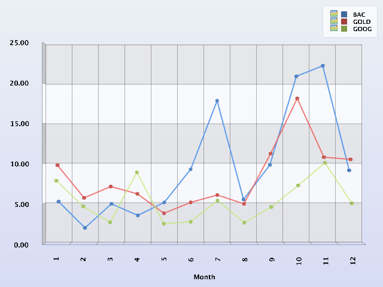
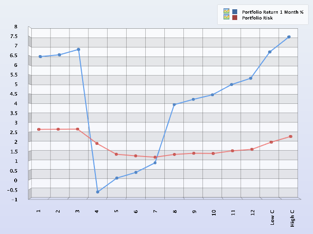
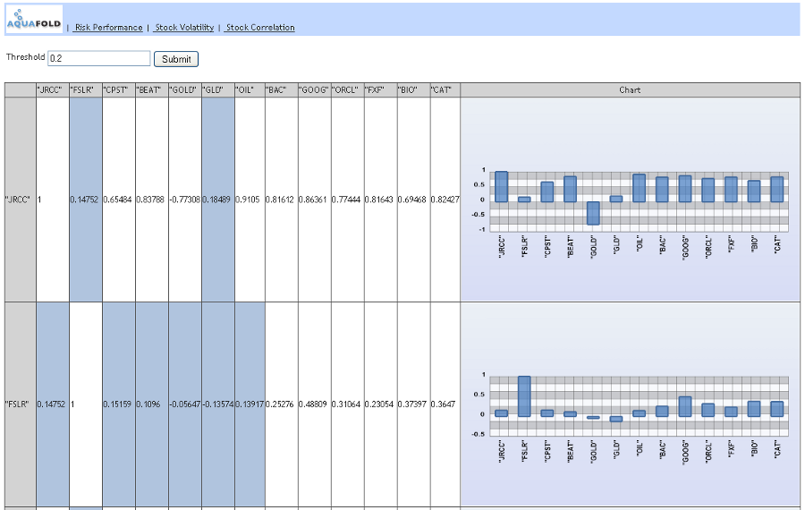

Portfolio Management and Risk Analysis Charts – Aqua Data Server Solution Examples
You can download project source code from:
http://www.aquafold.com/download/v17.0.0/solutions/FinancialExamples.zip
Updated: Jan-29-2011
Charts Implemented in this Project
- Security Price Volatility
- Risk-Performance Single Security vs. Portfolio
- Stock Prices Correlations and Diversification of Portfolio
Introduction.
Reports in this project are based on the real securities data downloaded from the Internet and processed using basic statistical functions such as Standard Deviation and Correlation. Results can be interpreted in investment terms and used in making decisions for estimating and predicting behavior of an individual security or forming a portfolio of stocks with the objective of minimizing risks of the investments.
Security Price Volatility
"Volatility" is % of stock standard deviation to the stock average price over a given period. (1 month in this example)
Interpretation:
Stocks of different nature (technology, banking , commodity) behave differently though the year. In May 2008 they start to behave in a single trend (volatility increase) with the volatility peak in July (no significant change in Average price 3 month before market crash).
In Sept 08 volatility has minimum for all stocks (2 month before the crash) and then steadily goes up with the maximum around the market crash time. Note that all stocks perform in unison unlike in the beginning of the year.
If this is a pattern preceding a market crash it can be used for predictions.
Read More: http://en.wikipedia.org/wiki/Standard_deviation
Implementation:
This chart requres using wto statistical functions - "Standard Deviation" and "Mean" from the Aqua Open API charting toolset.
Volatility is calculated as a percentage of the standard deviation of the stock mean.
volatility = aqua.math.stat.std(seriesOne)/aqua.math.stat.mean(seriesOne)*100;
Stock pricing data is the “close” price of the first day of the month January through December 2010 saved in the Project File “Annual Data.csv”
{kind=link}
Risk-Performance Single Security vs. Portfolio
"Risk" is percentage of the standard diviation for of a stock open price to the price average over a period of time (1 month in this example)
"Return" is the ration of the price at the beginnig of the month to the price at the end of the month minus1 muluplied by 100 to give a perentage of return or loss .
The diagrams can be interpreted in the following ways:
1. More riskier stocks tend to bring more returns and losses (look at GOLD, CPST compare with GLD).
Difference between GLD and GOLD is the first one is an ETF (collection of assets) GOLD ia an individual gold mining company
2. Diversification reduces risks but minimizes returns. Look at portfolio #4. It reduced losses from GOLD from -12% to -0.8%.
3. More riskier portfolios tend to bring better returns. Look at the portfolios staring from #6.
Interesting that the risk between Portfolio #6 and #12 increases 1.3 times while the return increases 15 times.
4. Adding more stocks to portfolio does not mean consistent risk decrease. Look at the Portfolio Risk line. It has minimum.
But even adding highly volatile stocks to the portfolio does not increase risk much. Look at adding ORCL and BAC.
5. It is hard to do in Excel but it would be nice to have an algorithm that tries different stocks combinations to find minimum risk for the portfolio.
Read More: http://en.wikipedia.org/wiki/Modern_portfolio_theory
Implementation:
Stock pricing data is the “close” price on all days of December 2010. Returns are calculated as a percentage
of “close” prices on the first day of the month to the “close” prices on the last day of the month.
Volatility is calculated as a percentage of the standard deviation of the stock mean.
stockRisk = aqua.math.stat.std(seriesOne)/aqua.math.stat.mean(seriesOne)*100;
stockReturn = (startValue / endValue - 1) * 100;
{kind=link}

{kind=link}
Stock Prices Correlations and Diversification of Portfolio
For this example we are tying to build a highly diversified portfolio with 6 stocks selected form 12 available in the matrix.
As a comparison we also select 6 stocks to build a less diversified portfolio and compare the risk an performance.
Diversification requires selecting stocks with less possible mutual correlation.
NOTE : Combining stocks with high negative correlation does not improve diversification. It is "hedging" - eliminating risks by offsetting the price change. Hedging apparently decreases the portfolio performance and very questionable
in terms of actual risk reduction. We'll try to select stocks with maximum independency, so the absolute value of the correlating has to be minimal. (Although line 16 can be a good hedging scenario)
Selection is made manually , based on observation of the charts and matrix data. It is not an optimal way of doing this. Optimal selection would involve comparison of all possible combinations 6 out of 12 (3690 combinations).
Based on observation FSLR seems to have low correlation with many of stocks and CAT has high correlation. So for "low correlation " portfolio we select FSLR,BEAT,JRCC,CPST,OIL,FXF and for "high correlation" CAT, ORCL, BIO, FXF, BEAT, GOOG.
Those portfolios have Risk (Standard deviation) 1.96 and 2.26 and returns over one month 6.73% and 7.52%. The low correlation(highly diversified portfolio) makes better return than random portfolios with higher risk (Portfolios 1-2-3 in the Risk-Performance spread sheet)
Potential for development. It would be great to implement two automated functions.
1. Function will calculate combination with lowest possible correlation out of given set of stocks. It can be used for forming a diversified portfolio.
2. Function that would dynamically recalculate the portfolio correlation and suggest which stocks become correlated. Based on this analysis it will be possible making selling and buying decisions to adjust the portfolio.
NOTE: All examples assumed equal funds distribution to every stock in the portfolio. Additional optimizations can be done by changing share of the capital put in each particular stock.
Read More: http://en.wikipedia.org/wiki/Diversification_%28finance%29
Implementation:
Pricing data sets for the socks shown in this example are “close” prices for every day of December 2010.
Every row in the table and subsequent graph represent correlation of the price series of the stock shown
in the beginning row and the price series of the stocks in the columns of the table.
The diagonal cells represent correlation of the stock series with themselves, which is always equal “1”.
The table is symmetrical relative to the diagonal since the correlation between stock price set “A” and “B” is equal to the correlation between “B” and “A” .
In the code calculations of each row in the table include the “Correlation” function from the Aqua Open API - aqua.math.stat.correlation
var seriesOne = allSeriesArray[i];
for (var j=0; j < allSeriesArray.length; j++)
{
dataSet.addRowWithValues(allSeriesArrayNames[i], allSeriesArrayNames[j], aqua.math.stat.correlation(seriesOne, allSeriesArray[j]));
}
correlatedDataArray[i] = dataSet;

{kind=link}